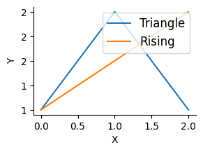

from fastcore.test import test_eq, test_fail
import stringsafepython
Helpers and setup
_find_frame_dict walks the call stack looking for a frame whose globals contain sentinel. This lets RunPython find the caller’s namespace without requiring an explicit globals dict. If no sentinel is found, it falls back to its own module globals.
_test_sentinel = True
d = _find_frame_dict('_test_sentinel')
assert '_test_sentinel' in d
d2 = _find_frame_dict('nonexistent_sentinel_xyz')
assert d2 is not Nonefind_var
def find_var(
var:str
):
Search for var in all frames of the call stack
find_var('_test_sentinel')TrueWhen ok_dests is set, _get_write_policy walks the MRO looking for tuple entries.
allow({str: [('test_method', AllowPolicy())]})
assert any(isinstance(x, tuple) and x[0] == 'test_method' for x in __pytools__[str])
__pytools__[str].discard(('test_method', AllowPolicy()))_AllowChecked wraps a method so that its WritePolicy is enforced before the actual call.
wc = _AllowChecked(Path('/tmp'), Path.exists, PathWritePolicy(), ['/tmp'])
assert callable(wc)
wc2 = _AllowChecked(Path('/etc'), Path('/etc').exists, PathWritePolicy(), ['/tmp'])
try: wc2()
except PermissionError: print("AllowChecked correctly blocked /etc")AllowChecked correctly blocked /etcBuiltins and wrappers
_cls_ok checks at access time by walking the object and its MRO. _name_in handles both plain strings and tuple entries.
_get_policy extracts a WritePolicy from a tuple entry if present.
_DirectPrint is a no-op wrapper that RestrictedPython’s _print_ and _print hooks delegate to. It simply calls the real print, bypassing RestrictedPython’s default print interception.
_callable_ok checks whether a callable should be allowed — it’s ok if it’s in __llmtools__, is a key in __pytools__, or its module has its __qualname__ registered via _cls_ok.
should_export
def should_export(
k, v, g
):
True if sandbox local k with value v should be exported back to caller globals g
SafeTransformer
def SafeTransformer(
errors:NoneType=None, warnings:NoneType=None, used_names:NoneType=None
):
A :class:NodeVisitor subclass that walks the abstract syntax tree and allows modification of nodes.
The NodeTransformer will walk the AST and use the return value of the visitor methods to replace or remove the old node. If the return value of the visitor method is None, the node will be removed from its location, otherwise it is replaced with the return value. The return value may be the original node in which case no replacement takes place.
Here is an example transformer that rewrites all occurrences of name lookups (foo) to data['foo']::
class RewriteName(NodeTransformer):
def visit_Name(self, node):
return Subscript(
value=Name(id='data', ctx=Load()),
slice=Constant(value=node.id),
ctx=node.ctx
)Keep in mind that if the node you’re operating on has child nodes you must either transform the child nodes yourself or call the :meth:generic_visit method for the node first.
For nodes that were part of a collection of statements (that applies to all statement nodes), the visitor may also return a list of nodes rather than just a single node.
Usually you use the transformer like this::
node = YourTransformer().visit(node)
on_call
def on_call(
caller, callee, fn, code, off, data
):
Call self as a function.
before_deny
def before_deny(
event, args, frame, msg, data
):
Call self as a function.
Main implementation
srcfn
def srcfn(
src
):
Stores src in linecache under <pyrun_{i%10}>, returns the name.
srcfn(''),srcfn('')('<pyrun_0>', '<pyrun_1>')__run_python
async def __run_python(
code:str, g:NoneType=None, ok_dests:NoneType=None
):
Call self as a function.
_run_python is the core sandbox executor. It compiles code with SafeTransformer, sets up the restricted globals (builtins, getattr hook, tools), handles the last-expression-as-return-value pattern, captures stdout/stderr, and exports locals back to the caller’s namespace (unless they’d shadow an existing callable or module; _-suffixed names always export).
RunPython
def RunPython(
g:NoneType=None, sentinel:NoneType=None, ok_dests:Unset=UNSET
):
Execute restricted Python with access to LLM tools, returning last expression. import works in the usual way. All builtins are available. Multiline code blocks can be used, including defining functions and variables, for use within the call.
NB: Locals are exported back to the caller’s namespace unless they’d shadow an existing callable or module. - Symbols ending with _ are always exported, even if they shadow existing names. Examples: len([1,2,3]) (builtin); add_msg(content="hi") (tool); df.shape (non-callable attr); [x**2 for x in range(5)] (last expression returned); sorted(my_dict.items()) (builtin + non-callable attr)
RunPython is the public API. It captures the caller’s globals via _find_frame_dict, optionally takes ok_dests for write-checking, and generates its docstring dynamically from the current __llmtools__|__pytools__ set so the LLM always sees an up-to-date tool list.
pyrun = RunPython()await pyrun('[]')[]create_pyrun_magic
def create_pyrun_magic(
shell:NoneType=None, pyrun:NoneType=None
):
Create magic
create_pyrun_magic()print('tt')tttype('t')stra = 1
a+=2
a3Unpacking is allowed:
a = [1,2,3]
print(*a)1 2 3def f(): warnings.warn('a warning')print("asdf")
f()
1+1asdf/var/folders/51/b2_szf2945n072c0vj2cyty40000gn/T/ipykernel_55925/3833129470.py:1: UserWarning: a warning
def f(): warnings.warn('a warning')2Classes and functions can be created:
await pyrun('''
class A:
def __init__(self): print('safe')
_ = A()''')safeawait pyrun('''
def f(): print('safe')
f()''')safewith expect_fail(PermissionError): await pyrun('os.system("ls")')Unsafe code inside functions and classes is caught:
with expect_fail(PermissionError):
await pyrun('''
class A:
def __init__(self): os.unlink('/unsafe')
A()''')with expect_fail(PermissionError):
await pyrun('''
def f(): os.unlink('/unsafe')
f()''')print(os.unlink)
print(type(os.unlink))
print(os.unlink.__qualname__)<built-in function unlink>
<class 'builtin_function_or_method'>
unlinkclass C: ...
c = C()isinstance(C, type)Trueisinstance(c, type)Falseallow_write_types
o = SimpleNamespace(x=1)
await pyrun('''
d = {}
d["x"] = 1
o.x = 2
d["x"],o.x''')(1, 2)Config
safepyrun loads an optional user config from {xdg_config_home}/safepyrun/config.py at import time, after all defaults are registered. This lets users permanently extend the sandbox allowlists without modifying the package. The config file is executed with all safepyrun.core globals already available — no imports needed. This includes allow, allow_write_types, AllowPolicy, PathWritePolicy, PosAllowPolicy, OpenWritePolicy, and all standard library modules already imported by the module.
Example ~/.config/safepyrun/config.py (Linux) or ~/Library/Application Support/safepyrun/config.py (macOS):
# Add pandas tools
allow({pandas.DataFrame: ['head', 'describe', 'info', 'shape']})If the config file has errors, a warning is emitted and the defaults remain intact.
Examples
a = {"b":1}
list(a.items())[('b', 1)]Path().exists()Trueos.path.join('/foo', 'bar', 'baz.py')'/foo/bar/baz.py'a_=3a_3aa_='33'len(aa_)2def g(): ...a=3def a(): ...Callables can’t shadow existing symbols:
test_eq(a, 3)inspect.getsource(g)'def g(): ...\n'with expect_fail(PermissionError): await pyrun("os.unlink('/foo/bar')")async def agen():
for x in [1,2]: yield x
res = []
async for x in agen(): res.append(x)
res[1, 2]import asyncio
async def fetch(n): return n * 10
print(string.ascii_letters)
await asyncio.gather(fetch(1), fetch(2), fetch(3))abcdefghijklmnopqrstuvwxyzABCDEFGHIJKLMNOPQRSTUVWXYZ[10, 20, 30]import numpy as npnp.array([1,2,3]).sum()np.int64(6)Allow policy examples
pyrun2 = RunPython(ok_dests=['/tmp'])await pyrun2("Path('/tmp/test_write.txt').write_text('hello')")5await pyrun2("open('/tmp/test_open.txt', 'w').write('hi')")2with expect_fail(PermissionError): await pyrun2("Path('/etc/evil.txt').write_text('bad')")
with expect_fail(PermissionError): await pyrun2("open('/root/bad.txt', 'w')")await pyrun2("open('/etc/passwd', 'r').read(10)")'##\n# User 'await pyrun2("import shutil; shutil.copy('/tmp/test_write.txt', '/tmp/test_copy.txt')")'/tmp/test_copy.txt'with expect_fail(PermissionError): await pyrun2("import shutil; shutil.copy('/tmp/test_write.txt', '/root/bad.txt')")
with expect_fail(PermissionError): await pyrun("Path('/tmp/test.txt').write_text('nope')")pyrun_cwd = RunPython(ok_dests=['.'])
# Writing to cwd should work
await pyrun_cwd("Path('test_cwd_ok.txt').write_text('hello')")5with expect_fail(PermissionError): await pyrun("Path('test_cwd_ok.txt').write_text('hello')")Path('test_cwd_ok.txt').unlink(missing_ok=True)# Writing to /tmp should be blocked (not in ok_dests)
with expect_fail(PermissionError): await pyrun_cwd("Path('/tmp/nope.txt').write_text('bad')")# Parent traversal should be blocked
with expect_fail(PermissionError): await pyrun_cwd("Path('../escape.txt').write_text('bad')")# Sneaky traversal via subdir/../../ should also be blocked
with expect_fail(PermissionError): await pyrun_cwd("Path('subdir/../../escape.txt').write_text('bad')")allow
def trusted_echo(): return subprocess.run(['echo', 'hi'], capture_output=True, text=True)with expect_fail(PermissionError): await pyrun("trusted_echo().stdout")
with expect_fail(PermissionError): await pyrun("import subprocess; subprocess.run(['echo', 'hi'])")allow(trusted_echo)
test_eq((await pyrun("trusted_echo().stdout")), "hi\n")
with expect_fail(PermissionError): await pyrun("import subprocess; subprocess.run(['echo', 'hi'])")Plots
allow_matplotlib
def allow_matplotlib(
):
Call self as a function.
import matplotlib.pyplot as plt
from matplotlib.figure import Figure
from matplotlib.axes import Axes
from matplotlib.axis import Axis
from matplotlib.spines import Spine, SpinesProxyallow_matplotlib()fig, ax = plt.subplots(figsize=(3,2), dpi=100)
ax.plot([1,2,1], label='Triangle')
ax.plot([1,1.5,2], label='Rising')
ax.tick_params(labelsize=10)
ax.set_xlabel('X', fontsize=10)
ax.set_ylabel('Y', fontsize=10)
ax.spines[['top','right']].set_visible(False)
ax.yaxis.set_major_formatter('{x:.0f}')
ax.legend(fontsize=12);
pyrun_tmp = RunPython(ok_dests=['/tmp'])
with expect_fail(PermissionError): await pyrun_tmp("fig.savefig(os.path.expanduser('~/plot.png'))")
await pyrun_tmp("fig.savefig('/tmp/plot.png')")